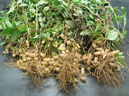
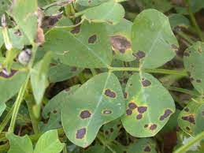

Groundnut, scientifically known as Arachis hypogaea, is a leguminous crop cultivated for its edible seeds. These seeds, commonly known as peanuts, are a rich source of protein and oil, making groundnuts a valuable crop in various culinary applications and processed products.
With their unique growth habit, groundnuts play a crucial role in agriculture. The flower stalk elongates, penetrates the soil, and the peanut pods develop underground, making them distinct from other legumes.
Groundnut cultivation has a rich history, dating back to ancient civilizations. Today, it is a major crop in many countries, contributing significantly to the global economy and providing essential nutrients to millions of people.
Groundnuts thrive in well-drained, sandy loam soil with good fertility. Full sun exposure is essential for optimal growth. Planting is usually done directly into the soil, and the crop requires proper care during its growth stages, including flowering and pod development.
Groundnuts come in various varieties, each with its distinct characteristics. Common varieties include Virginia, Spanish, and Valencia. Virginia varieties are often used for roasting, Spanish varieties for making peanut butter, and Valencia varieties for in-shell snacks.
Choosing the right variety depends on factors such as taste preference and the intended use of the groundnuts. Farmers often select varieties based on local climate conditions and market demand.
Groundnuts prefer well-drained, sandy loam soil with good organic content. The loose soil allows for easy penetration of the pegs during pod development. Since groundnuts are sensitive to waterlogging, maintaining well-drained soil is crucial to prevent diseases and ensure healthy plant development.
Soil testing is a valuable practice for groundnut farmers. It helps determine the soil's nutrient levels and pH, enabling farmers to make informed decisions regarding fertilization and soil amendments.
Groundnuts are susceptible to various pests and diseases, including leaf spot, rust, and aflatoxin contamination. Implementing proper crop rotation, using disease-resistant varieties, and timely pest control measures are essential for a successful harvest.
Integrated pest management (IPM) practices involve a combination of cultural, biological, and chemical control methods to mitigate the impact of pests and diseases on groundnut crops.
Harvesting groundnuts at the right time is crucial for optimal flavor and storage. When the plants exhibit yellowing and drying of the foliage, it indicates that the groundnuts are ready for harvest.
After carefully uprooting the plants, allow the groundnuts to air-dry for a few days. Shake off excess soil and remove the vines. Proper drying reduces the risk of mold and ensures better storage.
Store harvested groundnuts in a cool, dry place. Mesh bags or crates are suitable for storage, promoting air circulation and preventing mold or rot. Properly stored groundnuts can last for an extended period, maintaining their quality.